We are often interested in knowing the area of a region. Forget momentarily that we addressed this already in Section 5.4 and approach it instead using the technique described in Key Idea 7.0.1.
Let \(Q\) be the area of a region bounded by continuous functions \(f\) and \(g\text{.}\) If we break the region into many subregions, we have an obvious equation:
Total Area = sum of the areas of the subregions.
The issue to address next is how to systematically break a region into subregions. A graph will help. Consider Figure 7.1.1.(a) where a region between two curves is shaded. While there are many ways to break this into subregions, one particularly efficient way is to “slice” it vertically, as shown in Figure 7.1.1.(b), into \(n\) equally spaced slices.
We now approximate the area of a slice. Again, we have many options, but using a rectangle seems simplest. Picking any \(x\)-value \(c_i\) in the \(i\)th slice, we set the height of the rectangle to be \(f(c_i)-g(c_i)\text{,}\) the difference of the corresponding \(y\)-values. The width of the rectangle is a small difference in \(x\)-values, which we represent with \(\dx\text{.}\)Figure 7.1.1.(c) shows sample points \(c_i\) chosen in each subinterval and appropriate rectangles drawn. (Each of these rectangles represents a differential element.) Each slice has an area approximately equal to \(\big(f(c_i)-g(c_i)\big)\dx\text{;}\) hence, the total area is approximately the Riemann Sum
Taking the limit as \(n\to \infty\) gives the exact area as \(\int_a^b \big(f(x)-g(x)\big)\, dx\text{.}\)
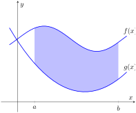(a)
(b)
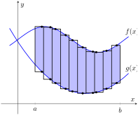(c)
Figure7.1.1.Subdividing a region into vertical slices and approximating the areas with rectangles
Theorem7.1.2.Area Between Curves (restatement of Theorem 5.4.17).
Let \(f(x)\) and \(g(x)\) be continuous functions defined on \([a,b]\) where \(f(x)\geq g(x)\) for all \(x\) in \([a,b]\text{.}\) The area of the region bounded by the curves \(y=f(x)\text{,}\)\(y=g(x)\) and the lines \(x=a\) and \(x=b\) is
Find the area of the region bounded by \(f(x) = \sin(x) +2\text{,}\)\(g(x) = \frac12\cos(2x)-1\text{,}\)\(x=0\) and \(x=4\pi\text{,}\) as shown in Figure 7.1.4.
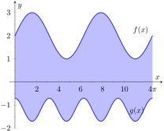
Figure7.1.4.Graphing an enclosed region in Example 7.1.3
The graph verifies that the upper boundary of the region is given by \(f\) and the lower bound is given by \(g\text{.}\) Therefore the area of the region is the value of the integral
A quick calculation shows that \(f=g\) at \(x=1, 2\) and 4. One can proceed thoughtlessly by computing \(\ds \int_1^4\big(f(x)-g(x)\big)\, dx\text{,}\) but this ignores the fact that on \([1,2]\text{,}\)\(g(x) \gt f(x)\text{.}\) (In fact, the thoughtless integration returns \(-9/4\text{,}\) hardly the expected value of an area.) Thus we compute the total area by breaking the interval \([1,4]\) into two subintervals, \([1,2]\) and \([2,4]\) and using the proper integrand in each.
The previous example makes note that we are expecting area to be positive. When first learning about the definite integral, we interpreted it as “signed area under the curve,” allowing for “negative area.” That doesn't apply here; area is to be positive.
The previous example also demonstrates that we often have to break a given region into subregions before applying Theorem 7.1.2. The following example shows another situation where this is applicable, along with an alternate view of applying the Theorem.
Example7.1.7.Finding area: integrating with respect to \(y\).
Find the area of the region enclosed by the functions \(y=\sqrt{x}+2\text{,}\)\(y=-(x-1)^2+3\) and \(y=2\text{,}\) as shown in Figure 7.1.8.
We give two approaches to this problem. In the first approach, we notice that the region's “top” is defined by two different curves. On \([0,1]\text{,}\) the top function is \(y=\sqrt{x}+2\text{;}\) on \([1,2]\text{,}\) the top function is \(y=-(x-1)^2+3\text{.}\)
Thus we compute the area as the sum of two integrals:
The second approach is clever and very useful in certain situations. We are used to viewing curves as functions of \(x\text{;}\) we input an \(x\)-value and a \(y\)-value is returned. Some curves can also be described as functions of \(y\text{:}\) input a \(y\)-value and an \(x\)-value is returned. We can rewrite the equations describing the boundary by solving for \(x\text{:}\)
Figure7.1.9.The region used in Example 7.1.7 with boundaries relabeled as functions of \(y\)
Figure 7.1.9 shows the region with the boundaries relabeled. A differential element, a horizontal rectangle, is also pictured. The width of the rectangle is a small change in \(y\text{:}\)\(\Delta y\text{.}\) The height of the rectangle is a difference in \(x\)-values. The “top” \(x\)-value is the largest value, i.e., the rightmost. The “bottom” \(x\)-value is the smaller, i.e., the leftmost. Therefore the height of the rectangle is
The area is found by integrating the above function with respect to \(y\) with the appropriate bounds. We determine these by considering the \(y\)-values the region occupies. It is bounded below by \(y=2\text{,}\) and bounded above by \(y=3\text{.}\) That is, both the “top” and “bottom” functions exist on the \(y\) interval \([2,3]\text{.}\) Thus
This calculus-based technique of finding area can be useful even with shapes that we normally think of as “easy.” Example 7.1.10 computes the area of a triangle. While the formula “\(\frac12\times\,\text{base}\, \times\,\text{height}\)” is well known, in arbitrary triangles it can be nontrivial to compute the height. Calculus makes the problem simple.
Example7.1.10.Finding the area of a triangle.
Compute the area of the regions bounded by the lines
\(y=x+1\text{,}\)\(y=-2x+7\) and \(y=-\frac12x+\frac52\text{,}\) as shown in Figure 7.1.11.
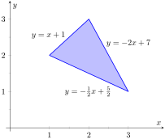
Figure7.1.11.Graphing a triangular region in Example 7.1.10
We can also approach this by converting each function into a function of \(y\text{.}\) This also requires 2 integrals, so there isn't really any advantage to doing so. We do it here for demonstration purposes.
The “top” function is always \(x=\frac{7-y}2\) while there are two “bottom” functions. Being mindful of the proper integration bounds, we have
Of course, the final answer is the same. (It is interesting to note that the area of all 4 subregions used is 3/4. This is coincidental.)
While we have focused on producing exact answers, we are also able to make approximations using the principle of Theorem 7.1.2. The integrand in the theorem is a distance (“top minus bottom”); integrating this distance function gives an area. By taking discrete measurements of distance, we can approximate an area using numerical integration techniques developed in Section 5.5. The following example demonstrates this.
Example7.1.12.Numerically approximating area.
To approximate the area of a lake, shown in Figure 7.1.13.(a), the “length” of the lake is measured at 200-foot increments, as shown in Figure 7.1.13.(b). The lengths are given in hundreds of feet. Approximate the area of the lake.
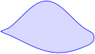(a)
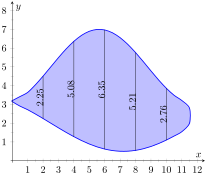(b)
Figure7.1.13.(a) A sketch of a lake, and (b) the lake with length measurements
The measurements of length can be viewed as measuring “top minus bottom” of two functions. The exact answer is found by integrating \(\ds \int_0^{12} \big(f(x)-g(x)\big)\, dx\text{,}\) but of course we don't know the functions \(f\) and \(g\text{.}\) Our discrete measurements instead allow us to approximate.
Since the measurements are in hundreds of feet, square units are given by (100 ft)\(^2 = \)10,000 ft2, giving a total area of 440,133 ft2. (Since we are approximating, we'd likely say the area was about 440,000 ft2, which is a little more than 10 acres.)
In the next section we apply our applications of integration techniques to finding the volumes of certain solids.
ExercisesExercises
Terms and Concepts
1.
The area between curves is always positive.
True
False
2.
Calculus can be used to find the area of basic geometric shapes.
True
False
3.
In your own words, describe how to find the total area enclosed by \(y=f(x)\) and \(y=g(x)\text{.}\)
4.
Describe a situation where it is advantageous to find an area enclosed by curves through integration with respect to \(y\) instead of \(x\text{.}\)
Problems
Exercise Group.
In the following exercises, find the area of the shaded region in the given graph.
5.
Between \(y=\frac12 x +3\) and \(y=\frac12\cos(x)+1\text{,}\) for \(0\leq x\leq 2\pi\text{.}\)
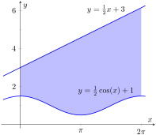
6.
Between \(y=-3x^3+3x+2\) and \(y=x^2+x-1\text{,}\) for \(-1\leq x\leq 1\text{.}\)
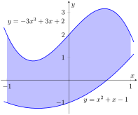
7.
Between \(y=1\) and \(y=2\text{,}\) for \(0\leq x\leq \pi\text{.}\)
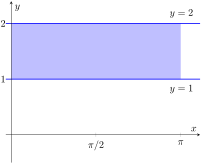
8.
Between \(y=\sin(x)+1\) and \(y=\sin(x)\text{,}\) for \(0\leq x\leq \pi\text{.}\)
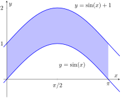
9.
Between \(y=\sin(4x)\) and \(y=\sec^2(x)\text{,}\) for \(0\leq x\leq \pi/4\text{.}\)
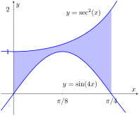
10.
Between \(y=\sin(x)\) and \(y=\cos(x)\text{,}\) for \(\pi/4\leq x\leq 5\pi/4\text{.}\)
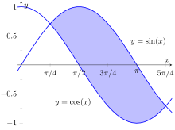
11.
Between \(y=2^x\) and \(y=4^x\text{,}\) for \(0\leq x\leq 1\text{.}\)
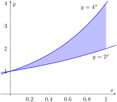
12.
Bounded by the curves \(y=\sqrt{x}+1\text{,}\)\(y=\sqrt{2-x}+1\text{,}\) and \(y=1\text{.}\)
Exercise Group.
In the following exercises, find the total area enclosed by the functions \(f\) and \(g\text{.}\)
The functions \(f(x) = \cos (x)\) and \(g(x) = \sin x\) intersect infinitely many times, forming an infinite number of repeated, enclosed regions. Find the areas of these regions.
20.
The functions \(f(x) = \cos(2x)\) and \(g(x) = \sin(x)\) intersect infinitely many times, forming an infinite number of repeated, enclosed regions. Find the areas of these regions.
Sum of repeated areas:
Exercise Group.
In the following exercises, find the area of the enclosed region in two ways:
by treating the boundaries as functions of \(x\text{,}\) and
by treating the boundaries as functions of \(y\text{.}\)
21.
Bounded by \(y=x^2+1\text{,}\)\(y=\frac14(x-3)^2+1\text{,}\) and \(y=1\text{.}\)
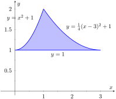
22.
Bounded by \(y=\sqrt{x}\text{,}\)\(y=-2x+3\text{,}\) and \(y=-\frac12 x\text{.}\)
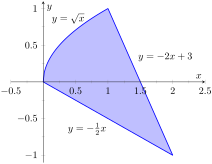
23.
Between the curves \(y=x+2\) and \(y=x^2\text{.}\)
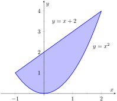
24.
Between the curves \(x=-\frac12 y+1\) and \(x=\frac12 y^2\text{.}\)
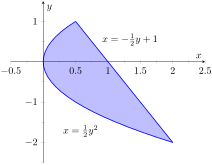
25.
Bounded by \(y=x^{1/3}\text{,}\)\(y=\sqrt{x-1/2}\text{,}\)\(y=0\text{,}\) and \(x=1\text{.}\)
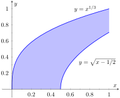
26.
Bounded by the curves \(y=\sqrt{x}+1\text{,}\)\(y=\sqrt{2-x}+1\text{,}\) and \(y=1\text{.}\)
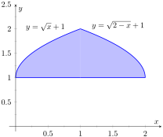
Exercise Group.
In the following exercises, find the area of the triangle formed by the given three points.
27.
\((1, 1)\text{,}\)\((2, 3)\text{,}\) and \((3, 3)\)
Area:
28.
\((-1, 1)\text{,}\)\((1, 3)\text{,}\) and \((2, -1)\)
Area:
29.
\((1, 1)\text{,}\)\((3, 3)\text{,}\) and \((0, 4)\)
Area:
30.
\((0, 0)\text{,}\)\((2, 5)\text{,}\) and \((5, 2)\)
Area:
31.
Use the Trapezoidal Rule to approximate the area of the pictured lake whose lengths, in hundreds of feet, are measured in 100-foot increments.
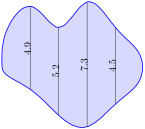
32.
Use Simpson's Rule to approximate the area of the pictured lake whose lengths, in hundreds of feet, are measured in 200-foot increments.